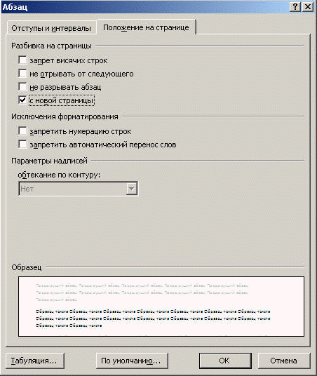

Положение текста на странице можно настроить при помощи команды Абзац вкладок Главная или Разметка страницы.
Установка флажка С новой страницы позволяет автоматически переносить выделенный абзац в начало следующей страницы.

Назад | Содержание | Вперед